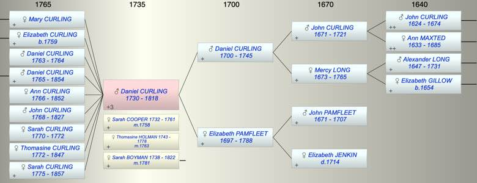

| [Index] |
| Daniel CURLING (1730 - 1818) |
|  |
| b. 1730 at St Laurence |
| m. (1) 03 Jan 1758 Sarah COOPER (1732 - 1761) at St Laurence |
| m. (2) 13 Jan 1763 Thomasine HOLMAN (1743 - 1778) at St Laurence |
| m. (3) 20 Dec 1781 Sarah BOYMAN (1738 - 1822) at St Laurence |
| d. 01 Aug 1818 at St Laurence aged 88 |
| Parents: |
| Daniel CURLING (1700 - 1745) |
| Elizabeth PAMFLEET (1697 - 1788) |
| Siblings (5): |
| Elizabeth CURLING (1724 - 1724) |
| Mercy CURLING (1727 - 1727) |
| John CURLING (1732 - 1804) |
| Alexander CURLING (1739 - 1789) |
| William CURLING (1742 - 1823) |
| Events in Daniel CURLING (1730 - 1818)'s life | |||||
| Date | Age | Event | Place | Notes | Src |
| Birth of daughter Mary CURLING | St Lawrence | ||||
| 1730 | Daniel CURLING was born | St Laurence | Note 1 | ||
| 06 Mar 1745 | 15 | Death of father Daniel CURLING (aged 45) | St Laurence | Note 2 | |
| 03 Jan 1758 | 28 | Married Sarah COOPER (aged 26) | St Laurence | Note 3 | |
| 1759 | 29 | Birth of daughter Elizabeth CURLING | St Laurence | Note 4 | |
| 1761 | 31 | Death of wife Sarah COOPER (aged 29) | St Laurence | Note 5 | |
| 1763 | 33 | Birth of son Daniel CURLING | St Laurence | Note 6 | |
| 13 Jan 1763 | 33 | Married Thomasine HOLMAN (aged 20) | St Laurence | Note 7 | |
| 1764 | 34 | Death of son Daniel CURLING (aged 1) | St Laurence | Note 8 | |
| 1765 | 35 | Birth of son Daniel CURLING | St Laurence | Note 9 | |
| 1766 | 36 | Birth of daughter Ann CURLING | St Laurence | Note 10 | |
| 16 Mar 1768 | 38 | Birth of son John Garrett CURLING | St Laurence | Note 11 | |
| 29 Oct 1770 | 40 | Birth of daughter Sarah CURLING | St Laurence | Note 12 | |
| 1772 | 42 | Death of daughter Sarah CURLING (aged 2) | |||
| 24 Jul 1772 | 42 | Birth of daughter Thomasine CURLING | St Laurence | Note 13 | |
| 05 Feb 1775 | 45 | Birth of daughter Sarah CURLING | St Laurence | Note 14 | |
| 01 Mar 1778 | 48 | Death of wife Thomasine HOLMAN (aged 35) | St Laurence | Note 15 | |
| 20 Dec 1781 | 51 | Married Sarah BOYMAN (aged 43) | St Laurence | Note 16 | |
| 31 Jan 1788 | 58 | Death of mother Elizabeth PAMFLEET (aged 91) | St Laurence | aged 90 ex MI | |
| 01 Aug 1818 | 88 | Daniel CURLING died | St Laurence | Note 17 | |
| Personal Notes: |
|
Daniel Curling PROB 11/1608 ex Genealogist
• made 23 Oct 1817 and proved in 8 Sep 1818 • ‘Daniel Curling the Elder’ of Ramsgate • owner of Chilton Farm, St Laurence, Isle of Thanet, of one hundred and sixteen acres now in the occupation of his son Daniel • Four equal fifth part shares of his land and property to his four daughters: Elizabeth Petley widow, Ann Curling, Thomasine Curling and Sarah wife of John Curling. • The remaining fifth part to his granddaughters Mary Ann Holman and Elizabeth Holman (daughters of Daniel’s daughter Mary who married Francis Holman but is not referred to in the will) • £1500 in stock to be put in trust with the dividends and interest for the benefit of his wife Sarah, after her death £375 to each and every one of his three daughters. The remaining £375 to his granddaughters Mary Ann Holman and Elizabeth Holman. His son in law John Curling and Edward Daniel of Ramsgate to be trustees and executors. • £500 shared equally between his daughters Ann Curling and Thomasin Curling • £100 to his son John Garrett Curling • to his wife Sarah his bed and bedstead, hangings, bolster, pillows and other furniture belonging to it • £19 –19s a piece to his executors • all other household goods excluding plate and linen (which are to go to the residue of his estate) to his daughters Ann Curling and Thomasin Curling. • His watch to his grandson Daniel Curling • The residue to his six children Daniel Curling the younger, John Garrett Curling, Elizabeth Petley, Ann Curling, Thomasin Curling and Sarah wife of John Curling and his said grandchildren Mary Ann Holman and Elizabeth Holman and their heirs, equally except that his grand-daughters are to ‘stand in loco parentis and have only one seventh part to share equally. • Witnesses: D B Jarman, Daniel Friend and Stephen Rayner jnr A codicil dated 22 March 1817 • £500 of stock to his two daughters Ann and Thomasin Curling is revoked and the amount goes into the residue as he has purchased the property wherein he dwells at Effingham Place and the two daughters are to inherit the same. Witnesses: D B Jarman, Daniel Friend and Stephen Rayner jnr |
| Created on a Mac™ using iFamily for Mac™ on 8 Oct 2023 |